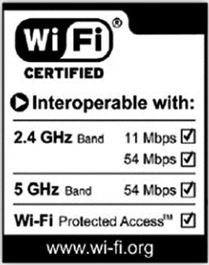
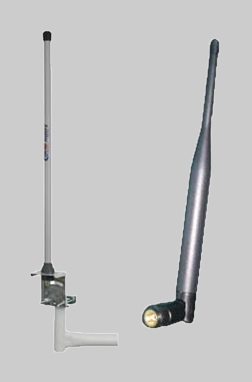
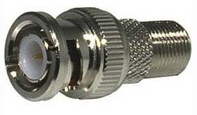
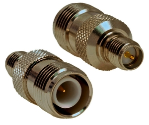

Xarxes sense fil: conceptes bàsics i configuració
Considereu què passa quan un treballador decideix que prefereix el seu PC en una ubicació diferent de l’oficina, o quan un director vol portar el seu PC portàtil a una sala de reunions i connectar-se a la xarxa. En una xarxa cablejada, s’hauria de modificar la connexió física de xarxa a la nova ubicació del treballador i, en el cas del director, assegurar-se que hi ha disponibilitat de connexió cablejada a la sala de reunions. Per evitar aquests canvis físics, les xarxes sense fil (WLAN) són, cada cop més, la solució més comuna.
Abans d’entrar en els diferents apartats, és necessari arribar a entendre l’abast de les comunicació sense fil (wireless en anglès).
WLAN
Acrònim de wireless local area network. Permet la connexió en xarxa entre dos o més clients sense necessitat de cables.
En un sentit ampli i general, entenem per comunicacions sense fil quan dos o més dispositius o dues o més persones, siguin mòbils o no, són capaços d’intercanviar informació utilitzant l’espectre electromagnètic.
Aquesta definició ens permet tractar sota el mateix nom, des d’una comunicació IrDA -infraroig- entre una PDA i un ordenador portàtil, fins a una comunicació de dos terminals de telefonia mòbil GSM entre dues persones. Fins i tot, la comunicació verbal entre dues persones és una comunicació sense fil, ja que utilitzen un canal com l’aire per intercanviar informació.
IrDa és una associació de 160 companyies que treballen per donar estàndards per a comunicacions sense fil per infrarojos (IR).
Les xarxes locals sense fil
La tecnologia WLAN és regida per l’estàndard 802.11, especificat per l’Institute of Electrical and Electronics Engineers (IEEE), el mateix organisme encarregat d’especificar la resta de tecnologies de xarxa (com l’ethernet, la 802.3). Mitjançant aquest procés, inicialment es garanteix la interoperabilitat entre diferents fabricants i el mateix funcionament dins les capes del model de comunicacions que en qualsevol altra tecnologia de LAN.
Per tant, la seva interacció amb protocols de comunicació, com TCP/IP, és totalment transparent. Des del punt de vista del sistema operatiu, emprar un adaptador de WLAN és igual que fer-ne servir un de LAN tradicional.
IEEE
L’Institute of Electrical and Electronics Engineers (Institut d’Enginyers Elèctrics i Electrònics) és una associació tecnicoprofessional mundial dedicada a l’estandardització, entre altres coses.
Estàndards sense fil
Una comprensió dels reglaments i els estàndards que s’apliquen a la tecnologia sense fil permetrà la interoperabilitat de totes les xarxes existents. Com en el cas de les xarxes cablejades, l’IEEE és la principal
generadora d’estàndards per a les xarxes sense fil. Els estàndards han estat creats en el marc dels reglaments establerts pel Comitè Federal de Comunicacions (Federal Communications Commission - FCC).
El protocol IEEE 802.11 o WI-FI és un estàndard de protocol de comunicacions de l’IEEE que defineix l’ús dels dos nivells inferiors de l’arquitectura OSI (capes física i enllaç de dades), especificant les normes de funcionament en una WLAN. En general, els protocols 802.x defineixen la tecnologia de les xarxes d’àrea local.
La família 802.11 inclou, actualment, sis tècniques de transmissió per modulació que utilitzen els mateixos protocols. L’estàndard original d’aquest protocol (l’IEEE 802.11) data de 1997, tenia velocitats de d’1 fins 2 Mbps i treballava en la banda de freqüència de 2,4 GHz.
La modificació següent va aparèixer el 1999, el protocol IEEE 802.11b. Aquesta especificació inclou velocitats des de 5 fins a 11 Mbps i treballa en la freqüència de 2,4 GHz. També es va fer una especificació sobre la freqüència de 5 GHz amb velocitats de 54 Mbps, era la 802.11a, però resultava incompatible amb els productes de la b i, per motius tècnics, gairebé no es van desenvolupar productes.
La versió final de l’estàndard es va publicar el juny de 2007 i recull les modificacions més importants sobre la definició original. Inclou les normes 802.11a, b, d, e, g, h, i i j.
El primer estàndard d’aquesta família que va tenir una àmplia acceptació va ser el 802.11b. A partir de 2005, la majoria de productes que es comercialitzen segueixen l’estàndard 802.11g amb compatibilitat amb el 802.11b.
El pas següent serà la norma 802.11n, en procés d’aprovació, que preveu velocitats màximes teòriques de 600 Mbps i treballarà en les dues bandes: la dels 2,4 GHz i la dels 5 GHz (vegeu la figura).
Estàndards rellevants per raons històriques o d’actualitat:
- 802.11 (any 1997): velocitat: 1-2 Mbps. Freqüència: 2,4 Ghz.
- 802.11b (any 1999): velocitat: 5-11 Mbps. Freqüència: 2,4 GHz.
- 802.11a (any 1999) : velocitat: 54Mbps. Freqüència: 5 GHz. Incompatible, doncs, amb els productes de l’estàndard 802.11b. Conseqüència: molt poc desenvolupament de productes sota aquest estàndard.
- 802.11g (any 2003): compatible amb 802.11b. Velocitat: 54 Mbps. Freqüència: 2,4GHz.
- 802.11n: (any 2009): velocitat: 600Mbps. Freqüència: treballa en 2,4GHz i 5 GHz. Compatible amb els anteriors (b, a, g).
- 802.11ac (any 2014): millora de l’anterior. Arriba a una velocitat de 1 Gbps quan treballa en la freqüència de 5 Gbps.
Dispositius
Tots els dispositius sense fil compleixen amb les normes i estàndards per tal de garantir la interoperatibilitat entre ells sense necessitat que siguin del mateix fabricant. A més, hi ha regulacions sobre l’ús d’aquests equips, els quals han des ser aprovats per al seu ús segons les regulacions de cada país.
- Etiqueta de certificació WI-FI
WI-FI Alliance
La WI-FI Alliance és una associació de venedors amb l’objectiu de certificar la interoperatibilitat dels productes basats en l’estàndard 802.11, segons les normes i estàndards. La certificació inclou les tres tecnologies IEEE 802.11 RF i els esborranys IEEE, com el 802.11n, i els estàndards de seguretat WPA i WPA2, basats en l’IEEE 802.11i.
Altres organitzacions certificadores i reguladores:
- Wireless LAN Association (WLANA)
- Federal Comunications Commission (FCC)
- Underwriters Laboratories, Inc. (UL)
- European Telecommunications Standards Institute (ETSI)
- 
- Etiqueta de certificació WI-FI
Els nodes poden ser estacions simples de treball d’escriptori, ordinadors portàtils o PDA. Es pot establir una xarxa ad hoc comparable a una xarxa cablejada de punt a punt. Ambdós dispositius funcionen com a servidors i clients en aquest entorn. Un problema d’aquest tipus de xarxa és la compatibilitat. Moltes vegades, les NIC de fabricants diferents no són compatibles.
Per resoldre el problema de la compatibilitat, s’acostuma a instal·lar un punt d’accés (AP) perquè actuï com a concentrador central per al mode d’infraestructura de la WLAN. L’AP es connecta a la LAN perquè proporcionin accés a Internet i connectivitat a la xarxa cablejada. Els AP estan equipats amb antenes i proporcionen connectivitat sense fil a una àrea específica que rep el nom de cel·la.
Segons la composició estructural del lloc on es va instal·lar l’AP i de la mida i el guany de les antenes, la mida de la cel·la pot variar considerablement. En general, l’abast és de 91,44 a 152,4 metres. Per donar servei a àrees més extenses, és possible instal·lar múltiples punts d’accés amb un cert grau de superposició (vegeu la figura). Aquesta superposició permet passar d’una cel·la a una altra (roaming).
Aquest fet s’assembla molt als serveis que proporcionen les empreses de telefonia mòbil. La superposició en xarxes amb múltiples punts d’accés és fonamental per permetre el moviment dels dispositius dins de la WLAN. Tot i que els estàndards IEEE no determinen res sobre aquesta qüestió, és aconsellable una superposició d’un 20%-30%. Aquest índex de superposició permet la itinerància o roaming entre les cel·les o àrees de cobertura i d’aquesta manera l’activitat de desconnexió i reconnexió no patirà interrupcions.
NIC: targetes de xarxa
Les targetes de xarxa (NIC) per a dispositius sense fil s’associen a equips mòbils, com els ordinadors portàtils. Als anys noranta, els dispositius sense fil per treballar en xarxa per a ordinadors portàtils eren targetes PCMCIA. Les targetes PCMCIA encara s’utilitzen però el més normal, avui en dia, és trobar la targeta integrada a l’ordinador portàtil.
Hi ha altres opcions com les targetes PCI per a ordinadors de taula i les interfícies USB, tal com es pot veure en la figura.
NIC: Network interface card
El punt d'accés
Un punt d’accés interconnecta els clients amb la xarxa cablejada. Els dispositius client normalment no es comuniquen directament entre ells, sinó que ho fan mitjançant un AP (access point). L’AP converteix els paquets TCP/IP de la trama 802.11 al format Ethernet 802.3, per tal d’interconnectar les dues tecnologies, WI-FI i Ethernet. Els clients s’han d’associar a un punt d’accés per obtenir els serveis de xarxa.
L’associació és un procés mitjançant el qual un client s’afegeix a una xarxa 802.11.
Un punt d’accés és un dispositiu de capa 2, amb les funcions equivalents a un commutador (switch) Ethernet.
Encaminadors sense fil
Els encaminadors sense fil tenen les funcionalitats dels AP, dels commutadors Ethernet i dels encaminadors, són 3 dispositius en 1. Per il·lustrar aquest concepte de 3 en 1, mireu la figura. L’AP de 3 antenes és un encaminador sense fil que té 4 ports d’Ethernet i 1 port d’ADSL. Equival a l’AP de dues antenes. Aquest porta un commutador integrat de quatre ports, i per això, a més de fer les funcions d’AP (de punt d’accés) pot proporcionar connectivitat als dispositius Ethernet, i fa les funcions de commutador.
La funcionalitat d’encaminador la cobreix el dispositiu marcat com a “DSL Modem”, que proporciona connectivitat amb altres infraestructures tecnològiques, en aquest cas ADSL.
Els encaminadors sense fil són el punt d’interconnexió de les dues tecnologies: Ethernet i WI-FI (figura).
Antenes
Tots els dispositius sense fil, tant els punts d’accés com els adaptadors de xarxa, acostumen a incorporar la seva pròpia antena. Però en molts casos és necessari ampliar la mida de la xarxa per a oferir una cobertura més gran.
La funció principal de l’antena és convertir senyals elèctrics en ones electromagnètiques i a l’inrevés. Gràcies a l’antena, aquests senyals elèctrics es poden emetre i viatjar fins a altres receptors.
Cada tipus d’antena té unes característiques i propietats que la fan més o menys indicada per a situacions concretes. Depenent del resultat que es vol obtenir s’escull el tipus d’antena més convenient. No s’escull el mateix tipus d’antena si es vol donar cobertura a una oficina que si es vol crear un enllaç Wi-Fi de llarga distància.
Les propietats principals de les antenes són les següents:
- Impedància. És la resistència que presenta l’antena, en el punt de connexió, al senyal de corrent altern que hi arriba del transmissor i que es mesura en ohms. La impedància afecta la transferència d’energia entre l’emissor i l’antena, i la situació ideal és que aquesta transferència sigui màxima. Això s’aconsegueix quan la impedància de l’antena i la del transmissor són iguals. Generalment, la impedància dels equips de ràdio és de 50 ohms.
- Amplada de banda. Les antenes estan dissenyades per a una freqüència concreta, però acostumen a tenir un marge de freqüències on poden assolir un bon rendiment. Aquest rang s’anomena amplada de banda. Com menys freqüència de funcionament d’una antena, més petita és l’amplada de banda.
- Directivitat o patró de radiació. Segons la manera i posició que té, l’antena irradia les ones d’una manera determinada. La manera en què les ones són irradiades s’anomena patró de radiació o directivitat. El patró de radiació es representa mitjançant un diagrama polar com el de la figura, en què es representen les intensitats dels camps o les densitats de potència en diferents posicions angulars, en relació amb una antena. En les direccions on la línia s’allunya més del centre, la potència d’emissió és superior. En la figura es veu que l’antena emet amb gran potència en un sentit (cap a la dreta), però amb molt poca potència en el sentit contrari. Aquests tipus d’antena que emeten gairebé tota l’energia en un sentit s’anomenen antenes direccionals. Les antenes que irradien les ones de manera quasi uniforme en totes les direccions s’anomenen antenes omnidireccionals o isotròpiques. Com a regla general, si es vol abastar una àrea circular, com una oficina o una casa, es fan servir antenes omnidireccionals. Si es vol crear un enllaç Wi-Fi amb un equip molt distant, s’utilitza una antena direccional que concentri tota l’energia cap a un lloc concret, cosa que es tradueix en un abast més gran, tot i que en una única direcció.
- Guany. El guany d’una antena serveix per a mesurar com millora la potència aparent de transmissió. Si s’utilitza una antena direccional, la potència es concentra més en uns punts que en uns altres, i fa que sembli que en aquests punts s’emet amb una potència més gran. Per aquest motiu, es pot dir que una antena direccional té un guany alt, mentre que una d’omnidireccional té un guany baix.

El guany es defineix com la diferència d’intensitat de camp entre una antena direccional en un punt i la intensitat que produeix una antena omnidireccional en aquest mateix punt.
El guany es mesura en dB (decibels).
- Polarització. Fa referència a la direcció del camp elèctric dins de l’ona electromagnètica. Les antenes verticals emeten un camp elèctric en direcció vertical, i, per tant, es diu que estan polaritzades verticalment. Les antenes horitzontals tenen, en aquest mateix sentit, polarització horitzontal. Perquè la comunicació establerta entre emissor i receptor sigui òptima, tots dos han de tenir antenes amb el mateix tipus de polarització.
Tipus d'antenes
Hi ha antenes de totes formes i mides, però bàsicament totes es basen en algun dels tipus que veurem a continuació.
Alguns dels models d’ús més comú son els següents:
1. Antenes verticals i dipols. Són les més comunes i són als punts d’accés i adaptadors Wi-Fi de tipus PCI. N’hi ha de dos tipus: les interiors, que s’inclouen en els adaptadors i en els punts d’accés, i les exteriors, més grans i més ben preparades per a resistir els accidents meteorològics.
- 
- Antenes verticals omnidireccionals (no estan a escala)
Són antenes omnidireccionals i, per tant, de guany baix, però molt indicades per a cobrir zones circulars com oficines, hotels, cases o llocs públics. En teoria, aquestes antenes omnidireccionals han de tenir un guany de 0 dB, però les antenes verticals només són omnidireccionals en el pla horitzontal, no en el vertical. Per aquest motiu, tot i que es consideren antenes omnidireccionals, amb les antenes verticals exteriors es pot aconseguir guanys entre 2 dB i 12 dB, mentre que amb les interiors s’aconsegueix un guany entre 2 dB i 7 dB.
A la figura podeu veure un esquema del patró de radiació d’una antena vertical:
2. Yagi. Les antenes Yagi són molt similars a les antenes de televisió. Són antenes direccionals de guany alt. Algunes s’acostumen a comercialitzar protegides a l’interior d’un tub de plàstic (figura). Amb les antenes Yagi s’obtenen guanys de 12 dB a 18 dB.
3. Panell. Es caracteritzen perquè són planes. També es coneixen com a antenes de tipus patch. Hi ha models dissenyats per a espais interiors i d’altres per a exteriors (figura). El guany d’aquestes antenes varia entre 12 dB i 20 dB.
4. Parabòliques. Tenen un guany molt alt; arriben al valor de 27 dB. El problema d’aquestes antenes és que també són molt direccionals. Això en dificulta l’alineació a llarga distància. N’hi ha de dos tipus: de reixa i d’acoblament (figura).
Les de reixa són indicades per a llocs amb vent fort, per la baixa resistència. Aquest és el tipus d’antena recomanat per a crear enllaços de llarga distància, sempre que hi hagi una línia visual entre les antenes, tot i que les Yagi també són vàlides.
A la figura podeu veure un esquema del patró de radiació d’una antena parabòlica:
Connectors
Per a connectar les antenes als adaptadors de xarxa o punts d’accés és necessari utilitzar un cable amb els connectors respectius.
Tot i que no hi ha...
… un valor exacte per a representar la pèrdua de senyal que produeix un connector, normalment s’indica que per cada connector que utilitzi la xarxa es perden 0,25 dB en la intensitat del senyal.
Tot i que no hi ha un connector únic estàndard, els més utilitzats son els següents:
- Connector N (figura). S’utilitza per a enllaçar trams de cable coaxial i és un connector de tipus rosca. Aquest connector és el que s’utilitza amb més freqüència en les antenes que treballen a una banda de freqüència de 2,4 GHz, tot i que també pot treballar en bandes de fins a 11 GHz.
- 
- Connectors BNC
- Connector BNC. S’utilitza amb el cables coaxials de tipus RG-58 i RG-59. Aquest tipus de connector té variants, com és el BNC-T (connector BNC en forma de T, que ha estat molt emprat en xarxes 10base2) i el TNC (BNC de tipus rosca).
- Connector SMA. És un connector de tipus rosca, de mida reduïda, que permet treballar amb freqüències entre 18 GHz i 33 GHz. Una variant del connector SMA, que també es fa servir a les antenes, és l’SMC, que té una mida inferior als connectors SMA.
- 
- Connector SMA a TNC
Com es comuniquen les LAN sense fil
Quan s’activi un client o node dins de la WLAN, la xarxa començarà a “escoltar” per veure si hi ha un dispositiu compatible amb el qual “associar-se”. Aquest fet es coneix com a escaneig, i pot ser actiu o passiu.
L’escaneig actiu fa que s’enviï una petició de sondeig des del node sense fil que es vol connectar a la xarxa. Aquesta petició de sondeig inclou l’identificador del servei (SSID) de la xarxa a la qual es vol connectar. Quan es troba un AP amb el mateix SSID, l’AP emet una resposta de sondeig. Es completen les passes d’autenticació i associació.
Trama de beacon
Paquet que informa de la presència i disponibilitat d’un dispositiu. Aquests paquets són enviats pels AP, encara que en mode ad hocsón els clients els qui els envien.
Els nodes d’escaneig passiu esperen les trames d’administració de beacons que són enviades per l’AP (mode d’infraestructura) o node de parells (ad hoc).Quan un node rep un beacon que conté l’SSID de la xarxa a la qual es vol connectar, es fa un intent de connexió. L’escaneig passiu és un procés continu i els nodes poden associar-se o desassociar-se dels AP amb els canvis en la potència del senyal.
Un cop establerta la connectivitat de la WLAN, un node passarà les trames d’igual manera que en qualsevol altra xarxa 802.x.
Modes de connexió
Mode d’infraestructura: el mode d’infraestructura s’utilitza per connectar equips sense fil a una xarxa cablejada, amb l’ajut d’un punt d’accés, el qual fa de passarel·la entre les dues tecnologies: WI-FI i Ethernet.
Mode ad hoc: es refereix a les configuracions on no hi ha un node central que coordini la comunicació. Són comunicacions entre iguals, també conegudes comapeer to peer.
Les WLAN no utilitzen una trama estàndard 802.3. Per tant, el termeEthernet sense filpot portar a engany.
Classes de trames
Hi ha tres classes de trames: de control, d’administració i de dades. Només la trama de dades s’assembla a les trames 802.3. Les trames sense fil i la 802.3 carreguen 1.500 bytes. Malgrat això, una trama d’Ethernet no pot superar els 1.518 bytes, mentre que una trama sense fil pot arribar als 2.346 bytes. En general, la mida de la trama de WLAN es limita a 1.518 bytes, perquè es connecta, amb una freqüència més alta, a una xarxa cablejada d’Ethernet.
Com que la radiofreqüència (RF) és un medi compartit, es poden produir col·lisions de la mateixa manera que es produeixen en un medi cablejat compartit. La principal diferència és que no hi ha un mètode pel qual un node d’origen pugui detectar que s’ha produït una col·lisió. Per aquest motiu, les WLAN utilitzen accés múltiple amb detecció de portadora i prevenció de col·lisions (CSMA/CA). Aquest mètode té la mateixa finalitat que CSMA/CD a Ethernet. Quan un node d’origen envia una trama, el node receptor retorna una confirmació de recepció positiva (ACK). Aquest procés pot consumir un 50% de l’amplada de banda disponible, és a dir, la quantitat de dades que es pot transmetre per unitat de temps.
Aquesta despesa, en combinar-se amb la del protocol de prevenció de col·lisions, redueix la taxa de transferència real de dades a un màxim de 5,0 a 5,5 Mbps en una LAN sense fil 802.11b amb una velocitat d’11 Mbps.
CSMA/CD
Els dispositius de xarxa que tenen dades a transmetre funcionen en mode “escoltar abans de transmetre”. Això vol dir que quan un node vol enviar dades, primer ha de determinar si el medi de transmissió està ocupat o no.
El rendiment de la xarxa també es veurà afectat per la potència del senyal i per la degradació de la qualitat del senyal a causa de la distància o de les interferències. A mesura que el senyal es debilita, es pot invocar/cridar la selecció de velocitat adaptable (ARS),que permet modificar la velocitat de transmissió per tal de fer arribar el màxim de dades, sense perdre la connexió. El dispositiu transmissor disminuirà la velocitat de transmissió de dades d’11 Mbps a 5,5 Mbps, de 5,5 Mbps a 2 Mbps o de 2 Mbps a 1 Mbps.
Seguretat
La seguretat ha de ser una prioritat per a qualsevol usuari o administrador de xarxes. La dificultat que presenta la seguretat en una xarxa cablejada es veu incrementada en el cas de les xarxes sense fil. Una WLAN està disponible per a qualsevol que estigui dins el radi d’acció del punt d’accés; per tant, amb un dispositiu sense fil i les tècniques de cracking oportunes, qualsevol es podria associar a aquest punt d’accés i tindria accés a la xarxa i als seus recursos.
Alguns dispositius sense fil que hi ha en el mercat porten unes configuracions per defecte que, pràcticament sense configurar res, deixen l’autenticació oberta. Fins el març del 2006 també alguns únicament implementaven l’estàndard de seguretat WEP, que és fràgil i fàcilment atacable. En aquesta data va passar a ser obligatori implementar WPA2.
Craking fa referència a les tècniques que permeten desxifrar contrasenyes o claus encriptades.
WEP
Wired equivalent privacy: Estàndard de seguretat que protegeix una xarxa sense fil. Utilitza claus de 64 bits o de 128 bits. Bàsicament, consisteix a implementar una clau en el punt d’accés que es demanarà al client quan intenti l’autenticació. Si el client s’autentica de manera correcta, es produeix l’associació i, a partir de llavors, la comunicació anirà xifrada.
Amenaces a la seguretat sense fil
La seguretat ha de ser una prioritat per a qualsevol usuari o administrador de xarxa. Les dificultats a mantenir una xarxa segura es veuen amplificades amb una xarxa sense fil, ja que una WLAN està oberta a qualsevol persona que estigui sota la cobertura del punt d’accés. Amb una targeta de xarxa sense fil i prou coneixement de les tècniques de trencament de sistemes, un atacant té l’avantatge de no necessitar accedir físicament a la xarxa per fer la connexió.
L’atacant se situa en una zona amb cobertura del punt d’accés de la xarxa que vol atacar. Els senyals de ràdio emesos pel punt d’accés, que actua com un repetidor i retransmet tots els paquets de xarxa que li arriben, són captats per l’atacant. Aquest, modificant la seva targeta de xarxa sense fil i amb un programari especial anomenat sniffer (per exemple, el programari Wireshark), és capaç de captar tot el trànsit que circula per la xarxa. Amb els paquets captats, l’atacant és capaç d’obtenir informació: noms dels servidors, dels equips, les seves IP i fins i tot, si té programari de desencriptació, les contrasenyes. Amb aquesta informació es podrà connectar lògicament a la xarxa i si no la tenim ben assegurada lògicament tindrem un problema. La figura intenta il·lustar aquesta situació.
WLAN: Wireles local area netork o xarxa local sense fil.
Protocols de seguretat
La primera versió de l’estàndard 802.11 va introduir dos tipus d’autenticació: autenticació per clau WEP oberta i compartida. A causa de les febleses d’aquest sistema d’encriptació, es van provar altres mètodes com ocultació de l’SSID i filtratge d’adreces MAC, però no van ser prou robustes.
Finalment, de camí cap a l’estàndard 802.11i es va desenvolupar l’algoris me d’encriptació TKIP (Temporal key integrity protocolo protocol d’integritat de clau temporal), que va donar pas al mètode de seguretat WPA (WI-FI Alliance WI-FI protected access o accés protegit WI-FI de la WI-FI Alliance). Aquest mètode va millorar notablement l’autenticació d’usuaris, però encara tenia algunes mancances.
Avui, l’estàndard que se segueix en la majoria dels escenaris és el 802.11i, semblant al WPA2 desenvolupat per la WI-FI Alliance. S’ha de destacar que per a escenaris on la seguretat ha de ser alta, WPA2 ha canviat l’algorisme d’encriptació a AES (Advanced encryption standard o estàndard d’encriptació avançat) i, a més, inclou una connexió per a un servidor RADIUS. És un protocol de tipus AAA (autenticació, autorització i administració) que distribueix claus diferents per a cada usuari, és a dir, un cop el dispositiu client està autenticat en el punt d’accés, en el procés d’associació se li enviarà una clau de xifratge única i personal, que permetrà que la seva comunicació sigui segura.
Fer segura una xarxa sense fil
La seguretat que proporcionen els mètodes de seguretat que heu vist, especialment WPA2, es pot millorar afegint una mica de profunditat al sistema, i això ho farem en tres passos:
- Ocultació de SSID: deshabilitar les difusions de l’identificador del punt d’accés.
- Filtratge per MAC: construcció d’unes taules on el punt d’accés permet o denega l’accés en funció de l’adreça física dels equips.
- Implementació de seguretat WLAN: WPA o WPA2.
RADIUS: Remote authentication dial in user service o autenticació remota de servei de connexió.
Una altra qüestió també important que han de considerar els administradors de xarxa és la de configurar la potència de radiació dels punts d’accés que estiguin prop de les parets de l’edifici, de tal manera que la cobertura a l’exterior sigui la mínima possible.
Actualment existeix pintura o paper d’empaperar, una paret que impedeix el pas de les ones de les xarxes sense fils sense perjudicar la comunicació per telefonia mòbil.
Hem de destacar que ni les tècniques d’ocultació d’SSID ni de filtratge per MAC es consideren mitjans per assegurar les xarxes sense fil per si soles per les raons següents:
- Les adreces MAC són fàcilment falsificables.
- Els identificadors dels punts d’accés són fàcilment descoberts encara que no en facin difusió.
En la figura podeu veure els tres escenaris:
- El punt d’accés WRS3 no difon l’SSID; per tant, el client 1 no pot associar-se, atès que no el troba.
- El punt d’accés WRS2 té implementat un filtratge per MAC. El client 2 no està dintre de la llista de MAC reconegudes i, per tant, no es produeix l’associació.
- El punt d’accés WRS2 té implementat WPA2. El client 3 coneix la clau i s’autoritza l’associació.
Instal·lació i configuració d'un punt d'accés sense fil
En aquest exemple es veu com es defineix l’SSID i el canal i com s’habilita la seguretat. A més, es mostra com es fa una còpia de seguretat de la configuració del dispositiu i com es restaura.
Com amb qualsevol implementació, les configuracions i les proves necessàries s’han de fer de manera incremental. El procés es començarà amb un únic punt d’accés i amb un únic client, sense tenir habilitada la seguretat. Es verificarà que el client rep l’adreça IP mitjançant el servidor DHCP, que és possible fer ping en l’encaminador local i que es pot navegar cap a l’exterior. Finalment, es configura la seguretat en la comunicació amb WPA2, deixant WEP únicament per als casos en què el maquinari no suporti WPA.
Els passos a seguir per verificar connectivitat amb equips cablejats-DHCP i accés a Internet son:
- Instal·lar el punt d’accés.
- Configurar el punt d’accés-SSID (sense seguretat).
- Instal·lar un client sense fil (sense seguretat).
- Verificar connectivitat sense fil-DHCP i accés a Internet.
- Configurar seguretat sense fil-WPA2 amb PSK.
La majoria del punts d’accés porten una configuració bàsica que permet que estiguin operatius des del primer moment. És recomanable modificar aquesta configuració que porten per defecte. Per facilitar aquesta operació, la gran majoria de punts d’accés porten una interfície web que en permet, de manera gràfica, la configuració.
Per a l’exemple següent, s’utilitza un encaminador Linksys WRT300N que incorpora un punt d’accés. Imaginarem que s’ha verificat la connectivitat i que el punt d’accés ja està instal·lat. En el cas d’un punt d’accés diferent, s’haurà de consultar el manual del fabricant. Queda fer la configuració.
Els passos que s’han de seguir per iniciar la configuració del WRT300N de Linksys són els següents:
- Accediu mitjançant el vostre navegador favorit a la utilitat de configuració del punt d’accés. En el cas del WRT300N, s’haurà d’introduir en el camp adreça del vostre navegador la IP 192.168.1.1.
- Un quadre de sistema us demanarà l’usuari i la contrasenya. Deixeu el nom d’usuari en blanc i en el camp de la contrasenya introduïu admin. Si el dispositiu ja ha estat configurat, el nom d’usuari i contrasenya poden haver estat modificats.
- Ja estem dintre de la utilitat de configuració.
Primer de tot, mirarem els valors per defecte bàsics per als clients que accedeixen per la part Ethernet del punt d’accés, la contrasenya d’administrador i la configuració per defecte de la interfície sense fil.
Configuració bàsica de xarxa
Podeu modificar l’adreça IP d’accés al dispositiu, si ho creieu convenient, que per defecte és la 192.168.1.1/24. Si modifiqueu aquesta adreça, per exemple per la 192.168.100.1/24, tingueu en compte que, un cop desats els canvis, el vostre equip deixarà de tenir accés al punt d’accés. Modifiqueu la vostra IP local per una que pertanyi a la mateixa xarxa IP.
En el cas que hem comentat, per exemple, podeu assignar al vostre equip la IP 192.168.100.10/24.
Un ajust molt important és decidir si el vostre AP ha de fer de servidor DHCP (dynamic host control protocol). És a dir, si el vostre AP, quan un client intenta comunicar-se amb ell, no té adreça IP, ell li n’assignarà una. Per defecte, la gran majoria de punts d’accés porten activada l’opció de treballar com a servidors d’adreces IP (DHCP). En aquest equip, donaria adreces IP de la xarxa 192.168.1.0/24 i la primera que assignaria seria la 192.168.0.50 i, com a màxim, podria donar adreces a 50 clients. Per tant, està configurat per assignar adreces del rang 102.168.0.5/24 - 192.168.0.100/24.
En la figura podeu veure la pantalla de configuració.
- Contrasenya d’administrador de l’encaminador. És molt important modificar el valor que porta per defecte, de fàbrica. Tots els equips del mateix model que hi ha en el mercat i, molt possiblement, la majoria d’equips del mateix fabricant porten aquesta configuració. Penseu que qualsevol pot accedir al manual de configuració a la pàgina web del fabricant i esbrinar com es pot accedir al vostre equip (figura).
- Configuració bàsica de la xarxa sense fil. Aquí podeu modificar l’identificador del punt d’accés (SSID), el canal on transmetrà, si és visible o no per als clients i amb quin protocol WI-FI treballarà (IEEE 802.11N, B, G o tots ells) (figura).


Un cop fets el canvis necessaris per a qualsevol opció, cal desar la configuració. A totes les pàgines de configuració hi ha l’opció de desar els canvis, cancel·lar els canvis i, al marge dret, hi ha una petita ajuda sobre els diferents camps configurables dintre de cada opció.
Configurant les opcions sense fil bàsiques
La pantalla de configuració bàsica és la primera que ens trobem quan accedim a la utilitat de configuració. Activeu la pestanya sense fil i seleccioneu Opcions bàsiques wireless (figura).
- Mode de xarxa. Si teniu dispositius a la vostra xarxa que treballen amb tecnologia Wireless-N, Wireless-G i 802.11b, utilitzeu el mode mixt (Mixed), que és l’opció per defecte. Si teniu dispositius Wireless-G i 802.11b, seleccioneu BG-Mixed. Si teniu únicament dispositius Wireless-N, seleccioneu Wireless-N Only, i si únicament teniu dispositius Wireless-G o Wireless-B, seleccioneu la seva opció. Si voleu desactivar la xarxa sense fil, seleccioneu Disable (figura).
- Nom de xarxa (SSID). L’SSID és el nom de xarxa i és compartit per tota la xarxa. Ha de ser el mateix per a tots els dispositius de la xarxa sense fil associats. És sensible a les majúscules i no pot superar els 32 caràcters. Per més seguretat, es recomana modificar l’SSID per defecte per un nom únic (figura).
Diferents tecnologies
Les tecnologies Wireless-N (802.11n), Wireless-G (802.11g) i Wireless-B (802.11b) són les diferents tecnologies sense fil que podeu trobar en els dispositius del mercat. N’hi ha d’altres, com la 802.11e, 802.11i, 802.11w, 802.1x o Wireless-X, que es fa servir als Estats Units.
- SSID amb multidifusió (broadcast). Quan els clients sense fil escanegen la xarxa sense fil per associar-se a algun dispositiu, detecten els SSID que el punt d’accés envia com a multidifusió. Per enviar multidifusions de l’SSID, deixeu habilitada aquesta opció tal com està per defecte. Al contrari, si no voleu que faci multidifusió de l’SSID, activeu l’opció de deshabilitar. Quan tingueu les modificacions fetes, recordeu desar els canvis.
- Banda de ràdio (radio band). Fa referència a la banda de freqüències per on es fa la transmissió. El millor, si teniu una xarxa on hi pot haver dispositius Wireless-N, Wireless-G i Wireless-B, és deixar el que hi ha per defecte (Automàtic). Per a dispositius únicament Wireless-N, seleccioneu una amplada pels canals de 40 MHz (Wide - 40 MHz Channel). Per a Wireless-G i Wireless-B, utilitzeu els 20 MHz (Standard - 20 MHz Channel), que a més és l’estàndard (figura).
- Canal de transmissió estàndard (standard channel). Una de les variables que s’ha de tenir en compte són els canals en què està dividida la banda de freqüències (seria l’equivalent als carrils en una autopista). L’estàndard WI-FI parla d’11 possibles canals. Igual que amb els carrils de l’autopista, s’ha de mirar de treballar al canal menys concorregut, per evitar al màxim les interferències. És a dir, per tal d’optimitzar la transmissió, s’aconsella mirar si hi ha més punts d’accés al vostre voltant i seleccionar un dels canals que no estiguin ocupats per altres punts d’accés. Si heu seleccionat treballar en la banda de freqüències dels 40 MHz, el canal estàndard es converteix en canal secundari per a les xarxes Wireless-N(figura).
Configurant la seguretat
El model WTR300N suporta set modes de seguretat sense fil. En la figura els podeu veure en forma de llista de més tou a més fort, tret de l’últim, que fa referència al mode de seguretat deshabilitada.
Depenent del microprogramari (firmware) que porti el dispositiu, hi pot haver alguna modificació:
- WEP
- PSK-Personal, o WPA-Personal en els dispositius amb microprogramari v0.93.9 o superiors.
- PSK2-Personal, o WPA2-Personalen els dispositius amb microprogramari v0.93.9 o superiors.
- PSK-Enterprise, o WPA-Enterprise en els dispositius amb microprogramari v0.93.9 o superiors.
- PSK2-Enterprise, o WPA2-Enterpriseen els dispositius amb microprogramari v0.93.9 o superiors.
- RADIUS
El terme personal, associat a alguns modes de seguretat, vol dir que no s’utilitza cap servidor d’autenticació; al contrari, amb els modes Enterprise s’ha de tenir un servidor d’autenticacions, normalment RADIUS, i s’utilitza l’autenticació EAP.
Ja s’ha vist que el mode WEP no és el més recomanable i que és prou tou pel que fa a seguretat i que PSK2, que és el mateix que WPA2 o IEEE 802.11i, és la millor de les opcions.
Si WPA2 és el millor, per què hi ha més opcions? La resposta és que hi ha moltes xarxes sense fil que treballen amb dispositius antics.
Atès que tots els dispositius client que s’associen a un punt d’accés han de treballar amb el mateix mode de seguretat amb què treballa el punt d’accés, aquest ha d’estar configurat amb el mode més dèbil.
Tots els dispositius sense fil fabricats després del març de 2006 han de suportar WPA2, o en el cas dels encaminadors Linksys, PSK2.
L’opció RADIUSpermet combinar l’opció de seguretat WEP amb un servidor d’autenticació RADIUS.
Per configurar la seguretat del dispositiu:
- Mode de seguretat (Security Mode). Selecciona el mode que voleu utilitzar: PSK-Personal, PSK2-Personal, PSK-Enterprise, PSK2-Enterprise, RADIUS o WEP. Un cop triat el mode de seguretat, s’hauran de configurar alguns paràmetres propis de cada mode.
- Paràmetres dels modes de seguretat (Mode Parameters). Cadascun dels modes PSK i PSK2 té paràmetres que es poden configurar (figura). Per exemple, si seleccioneu PSK2-Enterprise, heu de tenir un servidor RADIUS per a les autenticacions. Per tant, s’ha de configurar el punt d’accés amb els paràmetres del servidor RADIUS:
- Adreça IP del servidor RADIUS.
- Port de treball del servidor RADIUS. Si no s’ha modificat al llarg de la instal·lació, el port per defecte és el 1812.
- Encriptació (Encryption). Fa referència a l’algoritme d’encriptació que s’utilitzarà: AES o TKIP (AES és més robust que TKIP) (figura).
- La clau (Pre-shared Key):Un cop decidit el mètode d’encriptació, s’ha d’introduir una clau que haurà de conèixer el client que vulgui associar-se al punt d’accés (figura). Haurà de tenir entre 8 i 63 caràcters.
- Renovació de la clau (Key Renewal): període de renovació de la clau.
Restricció d'accés per MAC
Una altra característica útil per a assegurar la xarxa és utilitzar l’opció de filtratge per MAC. Aquesta opció acostuma a estar disponible en la majoria dels encaminadors Wi-Fi i punts d’accés. Aquesta funció permet definir filtres que permetin o deneguin a alguns equips associar-se a l’encaminador. Com que la direcció IP d’un ordinador es pot modificar fàcilment, l’encaminador necessita alguna manera més segura d’identificar els clients. Per aquest motiu es fa servir l’adreça MAC de la NIC Wi-Fi, que habitualment es fixa i no pot ser modificada.
L'adreça MAC
Algunes NIC, tant Wi-Fi com Ethernet, permeten modificar l’adreça MAC i, malintencionadament, es podria obtenir una adreça MAC vàlida pel filtre de l’encaminador i saltar la protecció copiant l’adreça MAC a la seva NIC.
Per a accedir a la configuració dels filtres MAC, mireu el manual del fabricant del vostre dispositiu. Un cop activat el filtratge, es pot:
- Bloquejear una sèrie de MAC concretes perquè no es puguin associar a l’encaminador.
- Bloquejar totes les MAC per defecte i permetre que es puguin associar a l’encaminador només aquelles que s’especifiquin explícitament.
Això es coneix com a política d’accés (denegar o permetre). En tots dos casos s’han d’afegir les MAC al filtre (figura).
El filtratge de MAC només actua amb clients Wi-Fi. No té efectes en ordinadors que es connecten a l’encaminador per cable.
Resolució de problemes
La resolució de problemes en una xarxa ha de seguir un procediment sistemàtic, revisant des de la capa física fins a la capa d’aplicació. Imaginem una situació, com la que il·lustra la figura, on un PC portàtil no es pot connectar a la xarxa.
Seguirem un procés sistemàtic que consisteix en tres passos i en el qual anirem descartant possibles fonts d’errades.
Pas 1. Eliminar el client com l’origen del problema
Si no hi ha connectivitat, s’ha de revisar el següent:
- Confirmeu la configuració correcta de la xarxa utilitzant la instruccióifconfig (ipconfigen Windows). Comproveu que s’ha assignat al PC una adreça IP correctament en cas que estigui configurat amb DHCP o estigui configurat amb una adreça estàtica.
- Confirmeu que el PC es pot connectar a la xarxa cablejada. Connecteu el dispositiu físicament a una LAN i feu ping a una adreça coneguda.
- Comproveu que la targeta de xarxa sense fil té els controladors ben instal·lats, que el mode de seguretat coincideix amb el del punt d’accés i que la clau introduïda és la correcta.
Si el PC de l’usuari funciona però el seu rendiment és baix, reviseu el següent:
- La distància de l’equip al punt d’accés.
- Reviseu que el client està configurat en el mateix canal que el punt d’accés i que ha detectat l’SSID correctament. Busqueu la presència en la zona d’altres dispositius que operin en la banda de 2,4 GHz, com per exemple telèfons sense fil, sistemes de monitorització de nens petits, microones i alarmes. Aquests dispositius poden causar interferències en la WLAN i causar problemes de connexió intermitent entre el client i el punt d’accés.
Pas 2. Confirmar l’estat físic dels dispositius WLAN
- Reviseu que tots els dispositius WLAN (punts d’accés, antenes, repetidors, etc.) estiguin al seu lloc.
- Reviseu que tots els dispositius estiguin connectats a la xarxa elèctrica i que hi hagi corrent.
Pas 3. Inspeccionar els cables de connexió
- Inspeccioneu les connexions dels dispositius de la xarxa cablejada buscant males connexions o cables que falten.
- Utilitzeu la xarxa cablejada per fer ping en els punts d’accés i en la resta de dispositius WLAN.
Si la connectivitat encara falla en aquest punt, pot ser que hi hagi algun problema amb el punt d’accés o la seva configuració, reviseu-la i, en cas que tot estigui correcte, si persisteix el problema podeu provar de connectar un nou punt d’accés. Finalment, un altre punt que heu de considerar és que encara que 802.11i és un estàndard, a vegades hi ha problemes de compatibilitat entre dispositius de diferents marques.
Selecció de canal incorrecta
Si els usuaris reporten problemes de connexió en l’àrea entre punts d’accés en una xarxa WLAN estesa, pot ser problema de les configuracions dels canals (figura).
La majoria de les WLAN operen en la banda de 2,4 GHz, que pot proporcionar fins a 14 canals, cadascun dels quals ocupa 22 MHz d’amplada de banda. L’energia no està repartida uniformement en tota l’amplada de banda del canal, sinó que és més potent al centre i s’esvaeix cap als extrems. En la imatge següent (figura) es mostra una representació gràfica dels canals en la banda de 2,4 GHz.
Llavors, el que passa és que si hi ha dos punts d’accés adjacents que utilitzen canals massa propers, es produeixen interferències. Per solucionar-ho, s’ha de planificar l’ús dels canals a la xarxa i vigilar que punts d’accés propers utilitzin canals tan allunyats com sigui possible (figura).
En separar els canals no se superposen i no es causa interferència. Una bona planificació utilitza una separació de cinc canals.
És a dir, per tal d’optimitzar la transmissió, s’aconsella, si hi ha més dispositius al voltant, mirar quin canal estan utilitzant i configurar el nostre en un canal diferent. Segons la recomanació, una separació de 5 canals. Per tant, si hi ha un punt d’accés que transmet al canal 1, el nostre hauria d’estar configurat per utilitzar el canal 6.
Ubicació incorrecta del punt d'accés
Si el vostre enllaç amb el punt d’accés no es comporta com espereu, es perd la connexió. Si les taxes de transferències són baixes, hi ha dos possibles motius que tenen a veure amb la distància als punts d’accés (vegeu figura).
- La distància al punt d’accés és massa gran, cosa que proporciona una mala cobertura.
- L’orientació de l’antena del punt d’accés en passadissos i cantonades disminueix la cobertura.
Per solucionar aquest problema, haureu de fixar l’emplaçament del punt d’accés de manera que en els punts d’accés adjacents hi hagi un encavalcament d’un 10%-15%. Per això n’haureu d’ajustar la potència.
- Canvieu l’orientació i la posició dels punts d’accés:
- Situeu els punts d’accés sobre possibles obstruccions.
- Situeu els punts d’accés verticalment a prop del sostre i en el centre de l’àrea de cobertura.
- Situeu els punts d’accés en els llocs on seran els usuaris. Per exemple, serà millor situar un punt d’accés en un saló ample que en un passadís.
La figura mostra una solució.
A part de les recomanacions anteriors, és aconsellable també seguir les instruccions següents:
- Assegureu-vos que els punts d’accés estan a una distància superior a 20 cm del cos de les persones.
- Instal·leu els punts d’accés lluny de microones. Aquests aparells emeten ones del mateix tipus que les connexions sense fil, en la mateixa banda de freqüències (2,4 GHz), amb la qual cosa es poden produir interferències en les comunicacions.
- No munteu el punt d’accés a les parets del perímetre de la superfície a la qual es vol donar cobertura.
- Quan es munti un punt d’accés al cantó d’un passadís, s’ha de situar a un angle que sigui la meitat de l’angle que formen les parets del passadís. Per exemple, si el passadís forma angle recte, haureu de situar el punt d’accés a un angle de 45 graus respecte a la paret.
Problemes amb l'autenticació i l'encriptació
La majoria de problemes amb què us trobareu en aquest sentit i que podreu resoldre estan causats per una configuració incorrecta del client. Si el punt d’accés espera un tipus d’encriptació i el client ofereix un tipus diferent, el procés d’autenticació falla (figura).
Heu de recordar que tots els dispositius que es connectin a un punt d’accés han d’utilitzar el mateix mètode de seguretat que el punt d’accés. Per tant, si un punt d’accés està configurat per WEP, tant el tipus d’encriptació com la clau compartida han de coincidir. Si s’utilitza el mètode WPA, el tipus d’encriptació que s’haurà de fer servir per als dispositius haurà de ser TKIP.
En el cas de les claus d’autenticació, també s’ha d’anar en compte. El punt d’accés esperarà una clau d’autenticació que enviarà el client en el procés d’associació. Aquesta ha de coincidir, en cas contrari no es durà a terme l’autenticació correctament i no es podrà associar.
S’han de tenir en compte tant el mètode de seguretat com les claus d’autenticació per tal que el procés d’autenticació i associació sigui correcte.